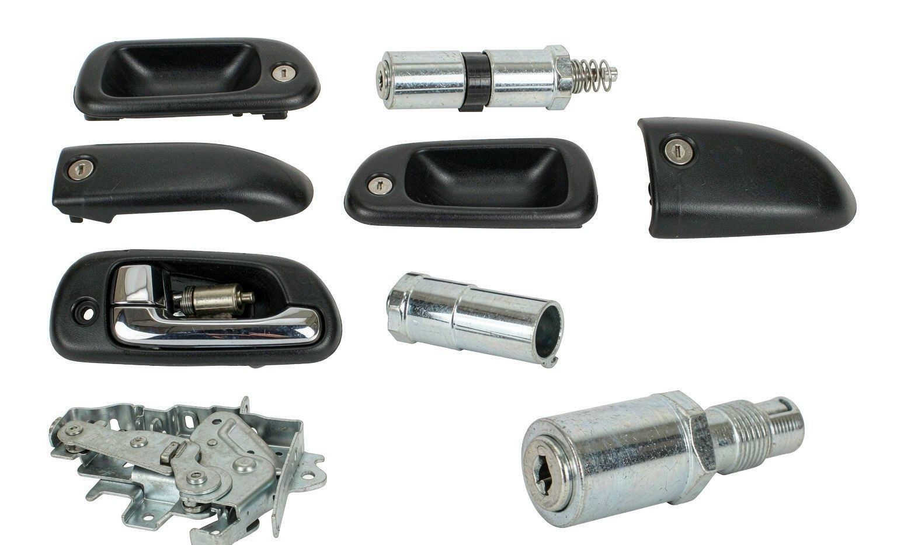

36410-0K020 is the original-equipment reference for this oem 36410-0k020 36410-0k010 36410-71010 auto parts transfer shift actuator trans. Importers and repair chains source it from KingMay in mixed container loads, alongside other electrical & sensors components. Check the tables below to confirm vehicle coverage.
OE 36410-0K020 is a OEM 36410-0K020 36410-0K010 36410-71010 Auto Parts Transfer Shift Actuator Trans reference. In the Hyundai-Kia numbering system the prefix 36410 denotes the OEM 36410-34015 36410-34014 36410-34016 family, which holds 13 references in KingMay's Guangzhou catalog. Wholesale MOQ is 10 pieces; quotes are issued within one business day.
How 36410-0K020 decodes in the Hyundai-Kia catalog system. The prefix identifies the component family; the suffix carries model and variant information.
| Field | Value |
|---|---|
| Full reference | 36410-0K020 |
| Normalized (no hyphen) | 364100K020 |
| Prefix (family code) | 36410 |
| Prefix maps to | OEM 36410-34015 36410-34014 36410-34016 |
| References sharing prefix 36410 | 13 in KingMay catalog |
| Numbering family | Hyundai-Kia 5+5 format |

Other part numbers frequently ordered together with 36410-0K020 by wholesale clients.
| OE Number | Component |
|---|---|
| 36410-0K010 | OEM 36410-0K020 36410-0K010 36410-71010 Auto Parts Transfer |
| 0000940048 | Air Flow Meter Sensor (MAF) for MERCEDES-BENZ CLK (C208), C- |
| 0000940148 | Air Flow Meter Sensor (MAF) for MERCEDES-BENZ CL-CLASS Coupe |
| 0000940548 | Air Flow Meter Sensor (MAF) for AUDI A4, BMW 1 Series, MERCE |
| 0000940848 | Air Flow Meter Sensor (MAF) for MERCEDES-BENZ E-CLASS (W210) |
| 0000940948 | Air Flow Meter Sensor (MAF) for MERCEDES-BENZ SPRINTER 4-t P |
| 0000943248 | Air Flow Meter Sensor (MAF) for MERCEDES-BENZ V-CLASS , VW C |
| 0001500480 | Ignition Coil for MERCEDES-BENZ C-CLASS (W202), E-CLASS (W12 |
Other part numbers in the electrical & sensors group that wholesale clients order alongside OE 36410-0K020. Grouping mixed references into one shipment is how most importers reach full-container freight thresholds.
Browse all 1,432 Electrical & Sensors OE references → · ← Previous in Electrical & Sensors · Next in Electrical & Sensors →
| Item | Detail |
|---|---|
| Export packing | Neutral carton, inner foam protection; custom labels on request |
| Lead time | 7 working days (stock) · 25-35 days (production run) |
| Shipping terms | FOB Guangzhou / Shenzhen; CIF & DDP negotiable |
| Payment | T/T, LC at sight for contracts; sample orders by T/T |
| QC documentation | Packing list + photo report + dimension check per shipment |
The questions below are the ones buyers raise most often about OE 36410-0K020 — fitment, fault symptoms, cross-references, pricing and export terms. Each answer is written to be quotable on its own.
OEM means the part was produced for the vehicle maker's assembly line; aftermarket means it is made independently to the same engineering drawing. For a oem 36410-0k020 36410-0k010 36410-71010 auto parts transfer shift actuator trans the practical gap is usually tooling age and packaging rather than fit, provided the tolerance class matches.
Yes. Sample lots of 36410-0K020 are used by QC teams to benchmark dimension, material and finish before a volume commitment. Send the reference and we will quote the sample alongside the production price.
Incoming batches pass a dimensional check, a material look-up against the electrical & sensors specification, and a visual inspection for finish defects. Critical dimensions are measured per carton and the photographs are archived against the order number.
Yes, if the alternate shares the same engineering envelope. Shortlist candidates from the Related OE References table, then check bolt pattern, electrical pinout and material grade. A difference in any of those three means it is a different part, not a substitute.
Build-year coverage is listed row by row in the Applications table above. Where several generations share one number, the newer rows usually carry a revised suffix — compare the last four characters before buying, since a suffix change often means a different connector or bracket.
Noise normally traces to worn internal surfaces, a loose mount, a dry bearing or contact with a neighbouring part. Isolate it by reproducing the sound at a fixed speed, then compare against the reference photo for 36410-0K020 to confirm the right replacement.
Buyers searching for OE 36410-0K020 most often land on these pages next.
Request a wholesale quote for 36410-0K020 through our contact page — most quotations return within one business day. All 36410-0K020 shipments leave with a packing list, photo documentation and QC report. Combined orders with other Hyundai-Kia references can share one container to cut landed cost. Payment terms are negotiable for established distributors; first-time buyers are welcome to start with a sample lot.
Send quantity + destination port. Quotations typically return within one business day.